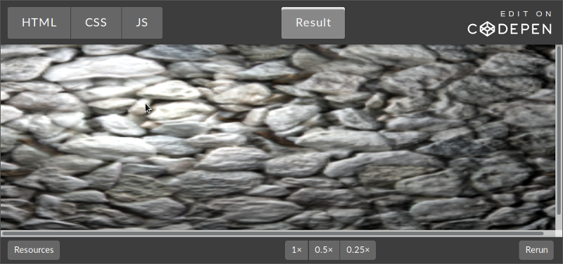
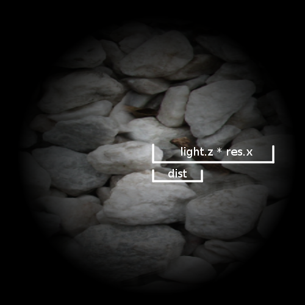
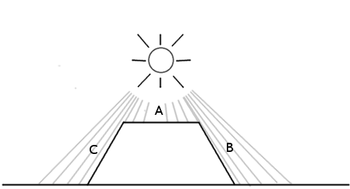
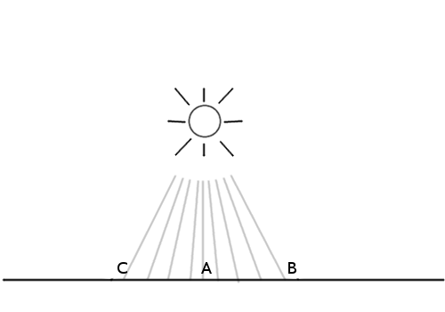
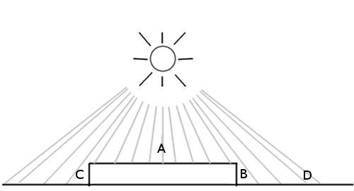
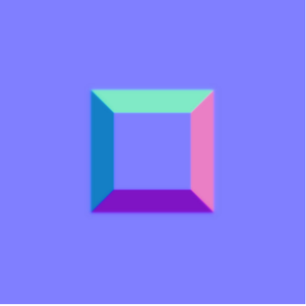
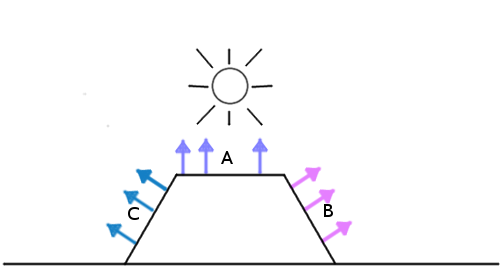
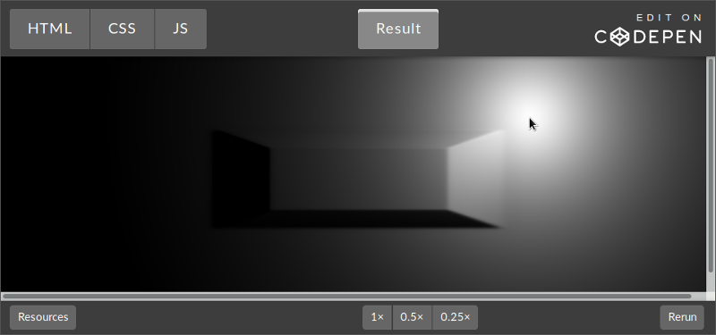

GetNormal
GetNormalНа этом этапе мы уже можем делать всё, что сделали в ShaderToy, однако теперь мы способны использовать любые текстуры и любые объекты, на любой платформе. Имея всю эту свободу, мы можем сделать что-нибудь вроде системы освещения, с реалистичными тенями и источниками света. Этим мы ниже и займёмся. Кроме того, я расскажу о техниках оптимизации шейдеров.
Освоившись с основами шейдеров мы на практике применим мощь видеопроцессора для создания реалистичного динамического освещения.
Начиная с этого момента мы будем рассматривать общие концепции графических шейдеров без привязки к конкретной платформе. (Для удобства во всех примерах кода по-прежнему будет использоваться JavaScript/WebGL.)
Для начала найдите подходящий вам способ выполнения шейдеров. (JavaScript/WebGL — это простейший способ, но я рекомендую вам поэкспериментировать со своей любимой платформой!)
Цели
К концу этого туториала вы не только начнёте хорошо ориентироваться в системах освещения, но и с нуля создадите собственную.
Вот как будет выглядеть конечный результат (нажмите мышью для включения света):

Многие игровые движки имеют уже готовые системы освещения, но понимание того, как они сделаны и как создавать собственные, даёт вам больше возможностей придать игре соответствующий ей уникальный вид. Кроме того, шейдерные эффекты не обязательно должны быть только «косметическими», они открывают двери потрясающим новым игровым механикам!
Отличным примером этого является Chroma. В этой игре игрок может бегать по динамическим теням, создаваемым в реальном времени.
Приступаем к работе: наша исходная сцена
Мы многое пропустим в первоначальной настройке, потому что она подробно рассмотрена выше. Начнём с простого фрагментного шейдера, рендерящего нашу текстуру:
GetNormal
Здесь не происходит ничего сложного. Код на JavaScript задаёт сцену и отправляет шейдеру текстуру для рендеринга и размеры экрана.
var uniforms = {
tex : {type:'t',value:texture},// Текстура
res : {type: 'v2',value:new THREE.Vector2(window.innerWidth,window.innerHeight)}// Хранит разрешение
}
В коде на GLSL мы объявляем и используем эти uniform-переменные:
uniform sampler2D tex;
uniform vec2 res;
void main() {
vec2 pixel = gl_FragCoord.xy / res.xy;
vec4 color = texture2D(tex,pixel);
gl_FragColor = color;
}
Прежде чем использовать координаты пикслей для отрисовки текстуры, мы их нормализуем.
Просто чтобы убедиться, что вы всё понимаете, вот вам небольшое задание на разогрев:
Задача: Отрендерите текстуру, не изменяя соотношения её сторон (Попробуйте сделать это самостоятельно, мы рассмотрим решение ниже.)
Довольно очевидно, почему текстура растянута, но если это непонятно, то вот подсказка: посмотрите на строку, в которой мы нормализуем координаты:
vec2 pixel = gl_FragCoord.xy / res.xy;
Мы делим vec2 на vec2, что аналогично делению каждого отдельного компонента. Другими словами, написанное выше эквивалентно следующему:
vec2 pixel = vec2(0.0,0.0);
pixel.x = gl_FragCoord.x / res.x;
pixel.y = gl_FragCoord.y / res.y;
Мы делим x и y на разные числа (на ширину и высоту экрана). Естественно, что изображение будет растянутым.
Что произойдёт, если мы разделим x и y gl_FragCoord только на x res? Или только на y?
Ради простоты дальше в туториале мы оставим нормализованный код таким же, то неплохо бы разобраться, что здесь происходит.
Шаг 1: добавление источника света
Прежде чем создать что-то интересное, нам нужен источник света. «Источник света» — это просто точка, передаваемая шейдеру. Для этой точки мы создадим новую uniform:
var uniforms = {
//Добавляем переменную источника света
light: {type:'v3', value:new THREE.Vector3()},
tex : {type:'t',value:texture},// Текстура
res : {type: 'v2',value:new THREE.Vector2(window.innerWidth,window.innerHeight)}// Хранит разрешение
}
Мы создали вектор с тремя измерениями, потому что мы хотим использовать x и y в качестве положения источника на экране, а z — в качестве радиуса.
Давайте присвоим в JavaScript значения нашему источнику света:
uniforms.light.value.z = 0.2;// Радиус
Мы будем использовать радиус как процент от размеров экрана, поэтому 0.2 будет составлять 20% экрана. (В этом выборе нет ничего особенного. Мы могли бы задать размер в пикселях. Это число ничего не значит, пока мы не начнём с ним делать что-нибудь в коде GLSL.)
Чтобы получить положение мыши, нужно просто добавить получатель события (event listener):
document.onmousemove = function(event){
// Обновляем источник света, чтобы он следовал за мышью
uniforms.light.value.x = event.clientX;
uniforms.light.value.y = event.clientY;
}
Давайте теперь напишем код шейдера, чтобы воспользоваться этой координатой источника света. Начнём с простой задачи: сделаем так, чтобы каждый пиксель в пределах радиуса источника света был видимым, а остальные были чёрными.
На GLSL это может выглядеть примерно так:
uniform sampler2D tex;
uniform vec2 res;
uniform vec3 light;// Не забывайте объявлять здесь uniform!
void main() {
vec2 pixel = gl_FragCoord.xy / res.xy;
vec4 color = texture2D(tex,pixel);
// Расстояние от текущего пикселя до источника света
float dist = distance(gl_FragCoord.xy,light.xy);
if(light.z * res.x > dist){// Проверяем, находится ли пиксель внутри радиуса
gl_FragColor = color;
} else {
gl_FragColor = vec4(0.0);
}
}
Здесь мы сделали следующее:
Ой-ёй! Источник света следует за мышью как-то странно.
Задача: Сможете это исправить? (Попробуйте снова разобраться самостоятельно, прежде чем мы решим эту задачу ниже.)
Исправление движения источника света
Возможно, вы помните, что ось Y здесь перевёрнута. Вы можете поторопиться просто ввести:
light.y = res.y - light.y;
Это математически верно, но если поступить так, то шейдер не скомпилируется! Проблема в том, что uniform-переменные невозмжоно изменять. Чтобы понять, почему, нужно помнить, что этот код выполняется для каждого отдельного пикселя параллельно. Представьте, что все процессорные ядра попытаются изменить единственную переменную одновременно. Плохая ситуация!
Мы можем исправить ошибку, создав новую переменную вместо uniform. Или ещё лучше — мы можем просто сделать этот шаг до передачи данных в шейдер:
uniforms.light.value.y = window.innerHeight - event.clientY;
Теперь мы успешно определили видимый радиус нашей сцены. Однако он выглядит слишком резким…
Добавление градиента
Вместо простой обрезки до чёрного цвета за пределами радиуса давайте попробуем создать плавный градиент у краёв. Можно сделать это с помощью расстояния, которое мы уже вычисляем.
Вместо присвоения всем пикселям в пределах радиуса цвета текстуры:
gl_FragColor = color;
мы можем умножать его на коэффициент расстояния:
gl_FragColor = color * (1.0 - dist/(light.z * res.x));
Это сработает, потому что dist — это расстояние в пикселях между текущим пикселем и источником света. (light.z * res.x) — это длина радиуса. Поэтому когда мы смотрим на пиксель ровно под источником света, dist равно 0, то есть мы умножаем color на 1 и получаем полный цвет.

На этом рисунке dist вычисляется для произвольного пикселя. dist меняется
в зависимости от того, в каком пикселе мы находимся,
а значение light.z * res.x постоянно.
Если мы посмотрим на пиксель на границе круга, то dist равно длине радиуса, то есть в результате мы умножаем color на 0 и получаем чёрный цвет.
Шаг 2: добавляем глубину
Пока мы не сделали ничего особенного, просто добавили нашей текстуре градиентную маску. Всё по-прежнему выглядит плоским. Чтобы понять, как это исправить, давайте посмотрим, что сейчас делает система освещения, и сравним с тем, что она должна делать.

В представленном выше случае стоит ожидать, что точка A будет освещена сильнее всего, потому что источник света находится прямо над ней, а B и C будут темнее, потому что на боковых сторонах практически нет лучей.
Однако вот что видит наша система освещения сейчас:

Все точки обрабатываются одинаково, потому что единственный фактор, который учитывает система — это расстояние на плоскости xy. Вы можете подумать, что нам всего лишь нужна высота каждой их этих точке, но это не совсем так. Чтобы понять, почему, рассмотрите этот рисунок:

A находится наверху фигуры, а B и C — по бокам. D — это ещё одна точка на земле. Мы видим, что A и D должны быть самыми яркими, причём D немного темнее, потому что свет достигает её под углом. С другой стороны, B и C должны быть очень тёмными, потому что до них почти не доходит свет, ведь они направлены от источника света.
Не так важна высота, как направление, в котором повёрнута поверхность. Оно называется нормалью поверхности.
Но как передать эту информацию шейдеру? Мы ведь наверно не можем передавать огромный массив из тысяч чисел для каждого отдельного пикселя? На самом деле, мы так и делаем! Только мы называем это не массивом, а текстурой.
Именно это делает карта нормалей: она просто является изображением, в котором значения r, g и b каждого пикселя представляют не цвет, а направление.

На рисунке выше показана простая карта нормалей. Если воспользоваться инструментом «пипетка» мы увидим, что направление по умолчанию («плоское») представлено цветом (0.5, 0.5, 1) (синий цвет, занимающий бо́льшую часть изображения). Это направление, указывающее прямо вверх. Значения x, y и z присваиваются значениям r, g и b.
Наклонная сторона справа повёрнута вправо, поэтому её значение x выше. Значение x также является значением красного, именно поэтому сторона выглядит немного красноватой или розоватой. То же самое относится ко всем остальным сторонам.
Карта выглядит забавно, потому что не предназначена для рендеринга, она просто кодирует значения нормалей этих поверхностей.
Давайте загрузим эту простую карту нормалей для теста:
var normalURL = "https://raw.githubusercontent.com/tutsplus/Beginners-Guide-to-Shaders/master/Part3/normal_maps/normal_test.jpg"
var normal = THREE.ImageUtils.loadTexture(normalURL);
И добавим её как одну из uniform-переменных:
var uniforms = {
norm: {type:'t', value:normal},
//.. делаем всё остальное
}
Чтобы проверить, что мы загрузили её правильно, давайте попробуем отрендерить её вместо текстуры, изменив код на GLSL (помните, что мы на этом этапе используем просто фоновую текстуру, а не карту нормалей):
Шаг 3: применение модели освещения
Теперь, когда у нас есть данные нормалей поверхностей, нам нужно реализовать модель освещения. Иными словами, надо сообщить поверхности, как учесть все имеющиеся факторы для вычисления окончательной яркости.
Простейшей для реализации моделью является модель Фонга. Вот как она работает: пусть у нас есть поверхность с данными о нормалях:

Мы просто вычисляем угол между источником света и нормалью поверхности:

Чем меньше угол, тем ярче пиксель.
Это значит, что когда пиксель находится непосредственно под источником света, где разность углов равна 0, он будет самым ярким. Самые тёмные пиксели будут указывать в том же направлении, что и источник света (это будет похоже на заднюю часть объекта).
Давайте реализуем эту модель.
Поскольку для проверки мы используем простую карту нормалей, давайте зальём текстуру сплошным цветом, чтобы чётко понимать, всё ли у нас получается.
Поэтому вместо:
vec4 color = texture2D(...);
Давайте сделаем сплошной белый цвет (или любой другой цвет):
vec4 color = vec4(1.0); // белый цвет
Это сокращение GLSL для создания vec4 со всеми компонентами, равными 1.0.
Вот как выглядит алгоритм:
1. Получаем вектор нормали текущего пикселя
Нам нужно знать, в каком направлении «смотрит» поверхность, чтобы можно было вычислить количество света, попадающего на этот пиксель. Это направление хранится в карте нормалей, поэтому получение вектора нормали заключается в получении цвета текущего пикселя в текстуре нормалей:
vec3 NormalVector = texture2D(norm,pixel).xyz;
Поскольку альфа-значение ничего не обозначает на карте нормалей, нам требуются только первые три компонента.
2. Получаем вектор направления света
Теперь нам нужно знать, в каком направлении указывает свет. Можно представить, что поверхность освещения — это фонарик, направленный на экран в точке расположения курсора мыши. Поэтому можно вычислить вектор направления света просто с помощью расстояния между источником света и пикселем:
vec3 LightVector = vec3(light.x - gl_FragCoord.x,light.y - gl_FragCoord.y,60.0);
Он должен иметь и координату Z (чтобы можно было вычислить угол относительно трёхмергого вектора нормали поверхности). С этим значением можно поэкспериментировать. Вы заметите, что чем оно меньше, тем резче контраст между яркими и тёмными областями. Можно представить, что это высота фонарика над сценой: чем он дальше, тем равномернее распространяется свет.
3. Нормализуем векторы
Теперь нам нужно нормализировать:
NormalVector = normalize(NormalVector);
LightVector = normalize(LightVector);
Чтобы оба вектора имели длину 1.0, мы воспользуемся встроенной функцией normalize. Это необходимо, потому что мы хотим вычислить угол с помощью скалярного произведения. Если вы не очень понимаете, как оно работает, то стоит немного изучить линейную алгебру. Для наших целей нам нужно знать только, что скалярное произведение возвращает косинус угла между векторами одинаковой длины.
4. Вычисляем угол между векторами
Давайте сделаем это с помощью встроенной функции dot:
float diffuse = dot( NormalVector, LightVector );
Я назвал переменную diffuse потому что этот термин используется в модели освещения по Фонгу, ведь она определяет количество света, достигающее поверхности сцены.
5. Умножаем конечный цвет на этот коэффициент
Вот и всё. Теперь умножим цвет на значение. Я создал переменную distanceFactor, чтобы наше уравнение легче читалось:
float distanceFactor = (1.0 - dist/(light.z * res.x));
gl_FragColor = color * diffuse * distanceFactor;
И мы получили работающую модель освещения! (Попробуйте увеличить радиус источника света, чтобы эффект был сильнее заметен.)

Хм, кажется, что-то не так. Похоже, что источник как-то наклонён.
Давайте ещё раз посмотрим на наши вычисления. У нас есть вектор света:
vec3 LightVector = vec3(light.x - gl_FragCoord.x,light.y - gl_FragCoord.y,60.0);
Что, как мы знаем, даст нам (0, 0, 60), когда источник света находится над текущим пикселем. После нормализации он будет равен (0, 0, 1).
Не забывайте, что для максимальной яркости нам нужна нормаль, направленная строго вверх, к источнику света. Нормаль поверхности по умолчанию, направленная вверх, равна (0.5, 0.5, 1).
Задача: Понимаете ли вы, в чём заключается решение? Сможете реализовать его?
Проблема в том, что в текстуре в качестве значений цвета нельзя хранить отрицательные значения. Нельзя обозначит направленный влево вектор как (-0.5, 0, 0). Поэтому при создании карт нормалей нужно прибавлять ко всему 0.5. (Или, выражаясь более обще, нужно смещать систему координат). Нужно понимать это, чтобы знать, что перед использованием карты нужно вычесть из каждого пикселя 0.5.
Вот как демо выглядит после вычитания 0.5 из координат x и y вектора нормали:

Нам нужно внести ещё одно исправление. Помните, что скалярное произведение возвращает косинус угла. Это значит, что выходные данные ограничены интервалом от -1 до 1. Значения цвета не могут быть отрицательными, и поскольку WebGL автоматически отбрасывает отрицательные значения, в некоторых случаях поведение будет странным. Для решения этой проблемы можно использовать встроенную функцию max и превратить это:
float diffuse = dot( NormalVector, LightVector );
в это:
float diffuse = max(dot( NormalVector, LightVector ),0.0);
И у нас получилась работающая модель освещения!
Можно поставить на фон каменную текстуру, а настоящую карту нормалей взять в репозитории этого туториала на GitHub (а именно здесь):
Нам нужно только изменить одну строку на JavaScript, с:
var normalURL = "https://raw.githubusercontent.com/tutsplus/Beginners-Guide-to-Shaders/master/Part3/normal_maps/normal_test.jpg"
на:
var normalURL = "https://raw.githubusercontent.com/tutsplus/Beginners-Guide-to-Shaders/master/Part3/normal_maps/blocks_normal.JPG"
И одну строку на GLSL:
vec4 color = vec4(1.0);// белый цвет
Нам больше не нужен сплошной белый цвет, мы загрузим настоящую текстуру, вот так:
vec4 color = texture2D(tex,pixel);
И окончательный результат будет таким, каким он показан в начале данной статьи.
Советы по оптимизации
Видеопроцессор выполняет свою работу очень эффективно, но очень важно знать, что может её замедлять. Вот несколько советов:
Ветвление
В шейдерах обычно желательно по возможности избегать ветвления. Хотя большое количество конструкций if редко бывает проблемой в любом коде для ЦП, в шейдерах для видеопроцессора они могут стать узким местом.
Чтобы понять, почему, стоит снова вспомнить, что код на GLSL выполняется для каждого пикселя на экране параллельно. Графическая карта может выполнить множество оптимизаций, исходя из того, что для всех пикселей нужно выполнять одинаковые операции. Однако если в коде будет куча if, то некоторые оптимизации выполнить не удастся, потому что теперь для разных пикселей выполняется разных код. Будут ли конструкции if замедлять выполнение, или нет, зависит от реализации на конкретном оборудовании и в графической карте, но неплохо помнить об этом, если вы хотите ускорить шейдер.
Отложенный рендеринг
Это очень полезная концепция при работе с освещением. Представьте, что нам нужны два источника освещения, или три, или десяток. Нам придётся вычислять угол между каждой нормалью поверхности и каждой точкой источника света. В результате шейдер будет выполняться с черепашьей скоростью. Отложенный рендеринг — это способ оптимизации такого процесса разбиением работы шейдера на несколько проходов. Вот статья, в которой подробно объяснено, что это значит. Я процитирую важную для нас часть:
Освещение — это основная причина выбора того или иного пути. В стандартном прямолинейном конвейере рендеринга вычисления освещения должны выполняться для каждой вершины и каждого фрагмента видимой сцены для каждого источника света в сцене.
Например, вместо передачи массива точек источников света, можно отрисовать их на текстур в виде кругов, цвет каждого пикселя которых будет представлять интенсивность освещения. Таким образом мы сможем вычислять комбинированный эффект всех источников освещения в сцене, а потом просто передать его конечной текстуре (или буферу, как её иногда называют) для вычисления освещения.
Способность разделить работу на несколько проходов — это очень полезная техника при создании шейдеров. Например, она используется для ускорения шейдера при вычислении эффекта размывки, а также в шейдерах жидкостей/дыма.
Следующие шаги
Теперь, когда вы получили работающий шейдер освещения, вот с чем ещё можно поэкспериментировать:
Ссылки
Каменная текстура и карта нормалей для этого туториала взяты с OpenGameArt: http://opengameart.org/content/50-free-textures-4-normalmaps.
Существует множество программ, помогающих в создании карт нормалей. Если вам интересно узнать больше о создании собственных карт нормалей, то вам может помочь эта статья.
Примечание:
Понимаю что перевод, но правильный ли там перевод из карты нормалей в вектор нормали?
//By "up" direction of our normal map has the value (0.5,0.5,1.0) in terms of rgb
//So we offset by that amount
normalVector.x -= 0.5;
normalVector.y -= 0.5;
Вроде каноничней:
normalVector = 2.0 * normalVector - 1.0;
А то из-за этого у варианта в статье и чёрного цвета не возникает с противоположной от источника стороны.
{kind=link}